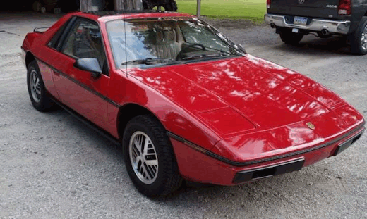
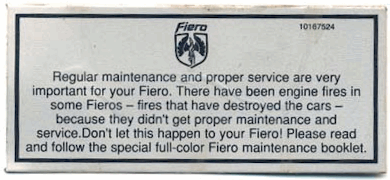
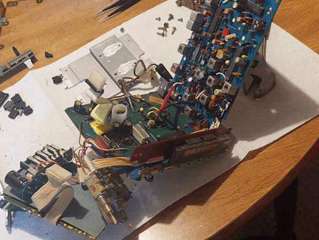

|
|
Guy Fiero |
Pick One:
Guy Fiero
|
|
This story starts like many others: Heartbreak. I mentioned in the Mr. Saturn page that he helped me through a breakup at some point, which is true, however he wasn't the only one. In times like these, a man may make some changes in his life to get his mind off things. Some will hit the gym, others may steal a decorative blue instrument from a restaurant... As for me, I decided the best course of action was to buy a really cool, completely impractical car from the 80s. Now, why a Fiero? Just to address the elephant in the room, yes, of course I watched Ronald Finger's Fiero Restoration, and it was indeed my introduction to the Fiero. However, before you label me a basic bitch & fake Fiero fan, I really do think the Fiero is quite an interesting car. In many ways, the Fiero is the "Proto-Saturn". It pioneered the same spaceframe construction and plastic body panels that the early Saturns became known for. It was also a car that shouldn't have existed. They were making some pretty major innovations on a shoestring budget (and it shows in many places). The Fiero was the only mid-engined car mass-produced in America, until the C8 Corvette came out at least. GM executives fought this car every step of the way (more evidence that GM is conditioned to kill everything good in the world, lest we forget the EV1). Despite everything, the Fiero managed to make it to dealerships, though not without some scars. Just about every shortcoming on this car is thanks to GM's meddling. In a way, you can hardly blame it. Enough about Fieros in general, what about my Fiero? After some searching on Facebook Marketplace, I found a car that was in less than perfect condition (typical for Fieros if you know them). However, it was well within my price range, so I decided to go for it anyways. That guy ghosted me BUT THEN I found an absolutely gorgeous example:
 This is a 1984 Fiero SE, with the 2.5L "Iron Duke" I4, paired with the 4-speed manual transmission. Anybody who knows about these cars will recognize how uncommon this is. Just about every Fiero nowadays, especially the red ones, have completely destroyed paint. Those same people will also recognize this as the original Amazon Fire car, as this was the model that just loved bursting into flames, causing the famous mass-recall that killed the Fiero.
 They even gave owners this super-slick sticker to place above the gear shift, just to remind you of the mortal danger you are presently in. If you're big into GM history, you may even recognize the Iron Duke as the same engine that powered the Grumman LLV, more widely known as the USPS Mail Truck. Obviously I had to have it. It was quite a bit more money than my first choice, but through the power of some Quick Math I decided that it would probably be cheaper than getting a crappy one repainted. Not only that, but the guy seemed pretty legit as well. He made a point to mention that he was a professional mechanic, so I was feeling pretty good.
After getting the car, I started taking note of all the issues. The "must-haves" were quite small, so I was still feeling good. As well as noting down all the small issues, there were a couple Fiero Things that I wanted to check on as well. First up, the air vents Oh God The Air Vents One of the big Fiero problems is the blower motor for the HVAC. For the lower speeds, there's a resistor in the wind tunnel that glows red hot. Debris likes to collect in here, promptly setting the car on fire. It's a good thing that I checked this too, as the entire wind tunnel was full of MOUSE NESTS! Obviously, you never want to find evidence of rodents in your recently-purchased vehicle, especially in the system that fills the cabin with the air that you use for breathing. However, this was the only evidence I could find, so I suited up and dove in. Obviously the entire dashboard had to come out for this, which is annoying but surprisingly not too bad on the Fiero. Just a couple bolts and the whole thing just lifts right out, which compared to most other cars is quite easy indeed.
Indeed the vents were completely clogged with mouse nests. Not ideal, but at least now I can clean them out and put that whole mess behind us. Right? WRONG! As it turns out, the rodents had been on the other side of the firewall as well, and the entire airbox was also full of nests. Not only that, but the heater core was clogged with them as well, so the entire thing had to come out. I sacrificed my sanity, both the heater core hoses, and my perfect "no coolant spilled on the shop floor" record, but at least that entire mess is behind us. What's next? Oh God The Brakes The main "must-have" that I knew about getting into this was that the brake lines were just about rotted through. Not a big deal, I replaced all the brake lines on Mr. Saturn, this will be nothing. As a little treat to myself, I decided to spring for some extremely nice pre-bent brake lines, so they should just bolt right into the car. Now if you know anything about working on cars, then you know that the word "should" means absolutely nothing in this world. As such, the lines most certainly did not just bolt right into the car. This whole rigmarole did reveal a couple of interesting things about this car, though. Remember our professional mechanic friend? Turns out one of the lines had already blown out, and he decided that it was acceptable to replace just that one instead of doing all of them. Doesn't seem super professional to me, but okay. Now this oversight was entirely my fault. The car had two lines running to the back, one on each side. I made the natural assumption that these were for the left and right rear brakes. However, upon replacing them, I learned that both rear brakes share a single brake line, and the other line is actually for the clutch. Somehow, I had gotten lost in all the other weirdness of the Fiero and completely forgotten that this car is, in fact, mid-engined. Including the transmission. Obviously the brake line kit did not come with replacement clutch lines. I could've bought a replacement for that too, but a quick look at The Fiero Store revealed a $200 price tag for the privilege. I decided I would practice float shifting instead. Unfortunately, due to past trauma involving Mr. Saturn and bleeding his brakes, I put off bleeding the Fiero's brakes for quite a while. In fact, between finishing installing the brake lines and actually bleeding them I procrastinated for about 5 months! After my award-winning procrastination session, the time finally came to bleed the brakes. Generally, brake lines hold fluid better when the fittings are tight, so I went around the car and checked them all to make sure they were. Good thing too, because both of the front calipers were loose! Generally this is an incredibly easy fix, at least until you're tightening the bolt and it suddenly gets loose. The threads inside the front left caliper completely stripped out. This is quite bad, and meant I now had to buy new calipers. Great. One RockAuto shopping spree later and we're finally back at it. I managed to install the new calipers without destroying them this time, and so came the fun part. Bleeding the brakes. In theory, brake bleeding is quite simple. Hydraulic systems (like the brakes) operate on the principle that fluids cannot be compressed, so any force applied is transferred straight through them. Of course, this only works if there's no air in the brake lines, as air is famously extremely compressible. So we bleed the brake lines to get all the air out, that way the system can operate to its maximum potential. Doesn't sound too bad right? Wrong. Mr. Saturn famously refused to bleed, causing many nights of trauma. Despite this, I was sure that the Fiero would be different, and so I opted for the lowest-tech bleeding method known to man. I like to call it "Stick A Clear Tube Attached To the Caliper In A Bottle Full Of Brake Fluid and Pump The Brakes Until You Don't See Air Anymore: The Game". When bleeding brakes, you generally start with the longest brake line. This isn't usually a problem, it just might take a while. However it can become a problem if you don't properly keep an eye on the master cylinder, and run out of brake fluid. You Do Not want the master cylinder to run out of brake fluid. Not only does this introduce air back into the system, defeating the entire point, but it introduces air into the very start of the system. This essentially erases any progress you've made, since you now have to bleed the entire line again to get all the air out (in addition to bleeding the master cylinder itself). Needless to say, this was Not Pleasing. However, I soldiered on regardless. I bled both the rear brakes, and moved on to the front left. This one was being a bit stubborn, so I decided to employ the pressure bleeder. The pressure bleeder, as the name suggests, works by forcing brake fluid (or air) into the master cylinder, pressurizing the system and forcing the fluid (and air) out of the caliper. This actually worked quite well, and within seconds there were no more air bubbles. Unfortunately, the same could not be said for the driver's side. There was actually remarkably little flow, so I figured I'd get in the car and pump the brakes a little while running the pressure bleeder. This definitely did the trick. In fact, it did the trick so well that it managed to completely empty the master cylinder within a minute. That's right, it happened again. If I was displeased the first time, then falling victim to the same thing again was downright upsetting. At this point, I decided to call it a night and come back tomorrow. The next day, I came back and started by bleeding the master cylinder again. This wasn't too painful thankfully, and eventually it stopped producing bubbles. At that point, I could finally move on to bleeding the last line. Of course, it decided to be stubborn again, and after a while I decided to use the pressure bleeder again (being much more careful this time). Strangely enough, it worked similarly to how it did on the passenger side, and within seconds it was bled. Now obviously, before I can call everything good I need to test the brakes. You can only do so much on a lift, so I decided to get the car back on its wheels for the first time in months and take it around the driveway. For no reason other than ensuring that the brakes were in tip-top shape, I decided that the best testing method would be to dump the clutch, rev it to the moon, then slam on the brakes. For science. At this moment, it felt like the car had revealed itself to me. Keep in mind that I still have never actually driven the car beyond going around the driveway, meaning up until this point I had never had the opportunity (or excuse) to really give it the beans. It was glorious. The engine came to life, the wheels lit up, and it screeched to a halt even faster than it got going. Despite being quite possibly the shortest pull in history, I was hooked. This was great motivation to finally take care of the last system preventing this car from being road legal, the cooling system. Oh God The Cooling System Remember when I had to pull the heater core? As a result of that, I obviously had to top up the coolant again. Taking off the coolant fill cap, I noticed that it looked a little grimy, so I decided to take a closer look. Big Mistake.
WHAT IN THE LORD'S NAME IS THAT As far as I can tell, the most likely story is that our good mechanic buddy decided that instead of running coolant, he would run hydrochloric acid. Whatever, how do we fix this. Obviously the entire cooling system needs to be flushed, many times. The thermostat housing also needs a complete refurbish, since it's covered in rust. Naturally, I got right to work. Alright, I procrastinated for a while then I got right to work. Using a bench grinder with a wire wheel attachment I knocked back the rust on the outside of the thermostat housing, then used a brass brush to give the inside the best chances of survival. Using a new paper gasket from The Fiero Store, I glued the hell out of both mating surfaces with RTV, stuck them together, then spent the next two hours fighting to get the lower bolt installed. At least it was finally done. For the coolant flush, I went down to the auto parts store and decided that I would try to improve my chances of success by investing in a dedicated "coolant flush" solution. It's a small bottle that you dump in alongside the water, but for the $13 I paid it had better pack a pretty good punch. So the day has arrived. I dumped in my entire bottle of coolant flush, filled the system with water until it wouldn't take anymore, and started the engine Immediately things go south Coolant is gushing out of the thermostat housing. Coolant spilling isn't necessarily a problem, since I hadn't put the cap back on yet. What is a problem is that putting the cap back on didn't make it stop. I managed about a minute of "flushing" before having to kill the engine. Casualties included my now shattered "no coolant spilled on the shop floor" record, my sanity, and worst of all, my entire $13 bottle of coolant flush that went into stripping the floor of all oils and contaminants. This is what broke me. I pulled the thermostat housing back off, reapplied the RTV with no gasket now, threw everything back together, and left it to cure. Then we proceeded to get hit with the biggest snowstorm of the season, with temperatures in the negatives for the foreseeable future. Unfortunately, this kills any coolant flushing plans, as the process heavily depends on the assumption that the water will not freeze. Months go by, and I do not touch the car. It's much too cold, and I'm much too downtrodden to even think about tinkering with this damn thermostat housing. But eventually, the weather warms up, and I'm feeling renewed. The RTV I put on several months ago is most likely cured by now, so I decided to take another crack at flushing the cooling system. I bought another $13 bottle of coolant flush since I was quite impressed with what it managed to do with just a minute of flushing (though smartly, I did not dump it into the cooling system just yet). I topped the cooling system back up with water, and started the engine. At the very least, it wasn't gushing coolant anymore, but it was still dripping. Dammit. At this point, I decided to formulate a new angle of attack. Clearly, there's something wrong with the thermostat housing for it to keep leaking. On the Fiero, the surface where the thermostat housing mates to the engine is notorious for warping, causing a bad seal. The idea is to apply JB weld to the sealing surface to add some material back, then sand it completely flat. This should create a new sealing surface that's much stronger than RTV just trying its best. If you know what this part actually looks like then you might already know where this is going, but for the uninitiated:
This is the Fiero thermostat housing. Astute observers may notice the giant metal rod sticking through the middle of it, and may have even realized how difficult this will make sanding. Because of this, I would be forced to sand the part in 4 separate sections, and get them all level via magic. However, I was undeterred. I applied the hell out of that JB weld, allowed it to cure, and got to sanding. This was a terrible mistake. As it turns out, it actually is quite difficult to sand something level when you're doing in in separate sections, and before long I had burned through the JB weld that I had built up. This broke me. At this point, something snapped inside me. My mentality quickly switched from "make it seal" to "MAKE it seal". So, what do you do when you can't level your JB weld? You make it level itself. I quickly formed a horrid, terrible plan. I would JB weld the gasket directly to the thermostat housing. Immediately this raises alarm bells, but the idea isn't completely insane. Think about it: We know that the sealing surface on the engine is perfectly flat, while the thermostat housing is warped. If I apply JB weld to the thermostat housing, add the gasket, then mount the whole thing to the engine, the JB weld should automatically level itself, and leave me with a flat sealing surface. The only major issue that I could think of was the potential of too much squeeze-out. If I fully mount the thermostat housing with the JB weld still uncured, it's possible that there won't be enough pressure applied to the sealing surface to actually make a good seal. I decided to tackle this issue by simply not fully mounting the thermostat housing. What I did was apply the JB weld, apply the gasket, then I mounted the part to the engine without the bolts, then took it off again. Theoretically, this should create a flat sealing surface without introducing the full pressure that the part will be under when installed, preventing excessive squeeze-out. Now obviously, to any man who hasn't been slowly beaten down over the course of months by this car, this sounds absolutely insane. But you know what? It totally did not work. At this point, I give up. I am most certainly not fixing this original thermostat housing, so my best bet is to try and find a replacement. This is much easier said than done, but hopefully some Fiero guy somewhere has just wrapped up a 3800SC swap and has some parts to spare. Unfortunately, I did not have as much luck with this as I hoped I would. I made a post on the Fiero forum asking for a 2.5L thermostat housing, but received no reply for about a week. But then, the unthinkable happened. I received a reply. It was not somebody with a thermostat housing, but they suggested that I contact a guy named Larry. They also said to be patient, as his doctor had limited him to an hour of computer time each day. That last part threw me off a bit. Given that I had no other leads, I sent an e-mail to Mr. Larry and waited for a reply. He actually responded quite quickly, and explained that unfortunately ever since his stroke he only carries 2.8L V6 parts. That first part also threw me off a bit. Despite not being able to supply the part, he pointed me towards two people in particular. The first guy only had Facebook Messenger, and since I'm banned from Facebook I quickly turned to the second guy, Pat. Pat also responded quickly, and didn't even immediately deny my request, which was encouraging. He said he would check his wares after getting home from an event, then in another e-mail separate from our chain, sent unsolicited Fiero pics. Naturally, I responded with my own, but communication died off shortly after. He must not have liked the car. Out of options and desperate for some sort of resolution, I knew what I had to do. So I started googling the other guy Larry mentioned, Todd. Creepy? Maybe. However, you need to understand the situation I was in here. My stalkingness did not go unrewarded either, as I learned that Todd actually runs a Fiero shop of his own, which had a contact e-mail. I sent Todd an e-mail, and he responded very quickly with a price and the selection of parts that I could choose from. The options weren't fantastic but I was sure at least one of them would be workable. They were all a later variant of the thermostat housing that doesn't have the warping problem, so my main concern was finding one with minimal corrosion. I examined the images closely, and picked the part that I thought had the least corrosion on the inside. While I was here, I also asked if he could scavenge a valve cover bolt, because ages ago I had dropped one of mine and never managed to recover it, which surely won't be an issue at some point. He quickly got back to me with photos of the part I had chosen, as well as the bolt. He didn't even charge me for the bolt. What a class act. Then he tried to get me to join a Fiero cult for $30 a year, which was tempting but I decided to hold off. (To be clear, I've amped up certain parts of the story here for comedic effect, but in reality everyone was incredibly helpful and enjoyable to talk to) Eventually the new part arrived, along with the new gasket that I ordered from RockAuto. The thermostat housing wasn't in fantastic shape, just about every sealing surface was rusty and the coating on the inside was chipping apart. This one got the same wire wheel treatment as the last one, in addition to drowning the inside with brake cleaner to try and do something about the chipping. We'll be doing a coolant flush anyways, so this isn't a huge deal. What is a big deal is the gasket that I ordered. You see, something really funny happened: it's the wrong one. I knew going in that the ancient scriptures (threads on the Fiero forum) foretold that they did not make new gaskets for this style of thermostat housing, but I had hoped that since then things had changed. They had not. So if you can't buy a gasket, what about making one? Unfortunately, the thermostat housing takes an unusually thick gasket, so most standard packs of gasket material will not work. Knowing this, I opted to pick up a 4 piece assortment pack from Felpro. The rubber and paper options in the pack were much too thin, but the cork options included seemed to have a chance. The thinner of the two seemed a bit too thin to seal, but the thicker one was so obnoxiously thick that I was hesitant to use it. I figured I would give the thin option a try first, just to be safe. I cut a decently fitting gasket out of the sheet using definitely the wrong method, and threw the thermostat housing on the car in record time. Turns out, after the 5th time you start to get real good at this. Unfortunately, the thin gasket was simply not up for the task. It started leaking before I even started the engine. In a fit of rage, I decided fuck it and cut a new gasket using the thick cork, with the old one as a template. This gasket was so incredibly thick that I was worried the part wouldn't sit flush against the engine, but as I tightened the bolt it actually seated properly. Not only that, but it didn't leak when I topped the system up. Time for the real test. I got in, turned the key, and started the engine. The engine ran horribly, because the later thermostat housing has a temperature sensor with a different connector from the original 84 one, so the ECM had no idea how hot the engine was. But it did not leak. I didn't run the engine for too long because it was sounding particularly grumpy, but I wasn't able to see a single drop from the thermostat housing. Even the cap seemed to seal, which is a common failure on these. So the next order of business is to swap the new connector onto the wiring harness. I was always going to do this anyways because the original had cracked wires, but now I kinda have to. This was pretty straightforward. I cut the old connector off, tinned the leads, soldered the new connector to the wiring harness, and covered it in some heatshrink to top it off. The engine was much happier after this, so I decided to take it for some victory laps around the driveway to let it get up to temp, as well as to sort out a couple small issues, like the upshift light. Everything went smoothly, meaning the car is finally mechanically stable enough to drive! The car may be drivable, but I have needs too, you know. The biggest need is a functional radio, so that needs to be sorted. Oh God The Radio. The Fiero came with its original Delco GM radio, featuring AM/FM and a bare-bones tape deck that doesn't even feature auto-reverse. How glamorous. For authenticity (and love of VFDs), I wanted to keep this radio around. Unfortunately, it had a few major problems. First of all, it did not keep time. You could set the clock, come back 10 minutes later, and it would already be behind a couple minutes. Second, the radio did not tune. Or rather, it didn't tune to 99% of the radio spectrum. Somehow, it can only flip between the same two stations. Thirdly, the tape deck does not work. This is the most normal issue, as rubber generally does not enjoy sitting in a hot car for 40 years. Finally, it sounded a bit distorted. Almost like blown out speakers, but different enough to make the radio itself suspect. So obviously I've got my work cut out for me, but I figured with some new belts and a recap it would be just fine. Now I've never exactly done a recap job or fully refurbished a tape deck, but I'm sure it'll be fine. Obviously, the best place to start is by tearing the radio apart. This was a horrible mistake. As it turns out, the psychopaths at Delco decided that this radio and its whopping 5 PCBs needed to be mounted every which way and secured with nothing more than ribbon cables, a thin metal cage, and hope. The hope quickly disappeared, followed shortly by the thin metal cage, leaving just ribbon cables holding this mess of PCBs together.
 Oh My Goodness Gracious. So that was a bit trickier than I was hoping, and I'm not entirely sure how I'll be getting it back together, but that is a future problem. Right now, I need to deal with these capacitors. I've never put together a capacitor kit before, but I knew that the voltage needed to be equal or higher, the capacitance needed to be the same, and they needed to physically fit. So armed with this knowledge, I went through the entire radio and noted down each capacitor with its voltage, capacitance, and dimensions. This took quite a while, but afterwards I had a full list of what I'd need to replace every single 40 year old cap in this radio. Followed by an evening browsing Mouser, I had a box full of capacitors on the way. In the meantime, I figured I'd tackle the tape deck. I had even less of an idea what I was doing here, so for the main belt I found a measurement online that seemed about right. For the tires I just measured the inner diameter, outer diameter, and thickness, then ordered the closest matches I could find. Finally, I went through the mechanism and dropped a touch of lithium grease on anything that moved, which seemed to help with tape loading and ejecting. After a few days, my Mouser order came in. I decided to start with the amplifier board, as it's relatively small and usually a problem on these radios. This went off without a hitch, so I moved onto the other boards in the radio. These did not go off without a hitch. I did most of my ordering correctly, but as it turns out I missed one cap on the main board, and one on the radio board. This is highly disappointing, I guess I won't be testing the radio today. While waiting for my second Mouser order to come in, my tape deck parts arrived. The belt and one of the tires fit perfectly, but the rest were too big. Turns out eyeballing it isn't a great strategy. Before I could figure out what to do with the tape deck, my Mouser order came in. I soldered in the two caps and put the radio back together, which was a disaster in its own right. Given the psychotic construction of this radio, I considered only having three screws leftover on my bench a win. I was sure that, assuming the radio didn't explode from a mistake on my part, my efforts would at least fix something. What I wasn't expecting was no change whatsoever. That's right, it still didn't keep time, it still didn't tune to stations, and it still didn't sound great. At this point, I was at a loss. I had no idea what was wrong with this radio, and I had begun to look into replacement options. This is when a glorious opportunity presented itself to me. Dad's 1991 Chevrolet Caprice Classic. Dad had owned this car since he was a young hooligan, and so it had many young hooligan modifications. Being a young hooligan myself, I was very interested in these, not the least of which being the aftermarket Sony CDX-GT400 CD head unit. Now I was very hesitant about harvesting parts from my dad's pride and joy, but as it turns out, my dad had grown into a purist and already wanted to reinstall the original head unit anyways, so he had no problem letting me have the Sony for my rustbucket. This was very exciting, I've been eyeing that Sony radio since I was a kid. I thought it was the coolest thing in the world, so it's very cool to finally have my turn with it. This was one of many modifications that my dad had installed himself, so I was quite excited to inspect his handiwork. Initially, I had trouble getting the radio out of its bracket, but thankfully the original keys to remove it were tucked neatly in the glove box. The radio pulled out, and immediately things went downhill. First of all, turns out there is nothing holding this radio in. The only thing preventing it from pulling out of the dashboard was the trim around it. Horrifying. Even more horrifying was the wiring harness. There are two ways to get audio out of this head unit, you can either use the speaker wires from the harness, or the RCA jacks on the rear of the unit. My dad had opted for the RCA jacks, which is all fine and dandy, but he also decided to completely cut the speaker wires out of the harness. Because I'm not running a dedicated amp in my sound system, I really wanted to use the wires from the harness. Unfortunately with the wires cut completely flush, something would have to be done. In this time of crisis, I turned to a good friend: $13 Pioneer DEH-2400F from a flea market. I had no intention of using this head unit instead, but I had every intention of stealing the pins from its wiring harness to rebuild mine. This went quite smoothly (after learning the hard way how to depin these connectors), it was just a bit time-consuming. After my harness was rebuilt, I had to wire it into the car's harness. For this task I purchased an old GM radio adapter kit, because I wanted my modifications to be reversible should I decide to get another OEM radio later. Kindly, they had labeled each wire with what it did and the colors all matched up with the Sony's harness (since I thought ahead and made sure to keep the colors consistent when rebuilding the harness). After lots of insulation stripping, soldering, and insulating, I was left with a spaghetti mess of wires that definitely could've (and should've) been shorter, but I'm sure I'll find some place to tuck all the excess wire. It'll be much easier to remove than the original radio with this setup, too. I turned the key and the radio came to life. Somehow, I managed to not cross any wires and everything worked first try. Extremely suspicious, but I'll take the win for now. Unfortunately, this did reveal the next bottleneck of the sound system: the speakers. Believe it or not, the original 40 year old Delco speakers are not holding up very well, and I doubt they sounded fantastic when new anyways. The dope-ass headrest speakers are nothing but mids, and you can hear the dash speakers slowly rattling themselves apart. Regardless of the questionable speaker situation, the sound system is more than serviceable for now. I can listen to my Zune and even play some CDs, which is good enough for me.
So, we've finally made it. At this point, the Fiero is technically good enough to drive, so it's time to actually drive it. I bought the car in September of 2025, and never actually got to drive it until May of 2026. That's fucked up, so naturally there was a lot riding on this. Before driving the car, I made sure to get it legally registered and insured and all the jargon because I'm a good boy, then figured I might as well take the time to Pimp My Ride a bit before taking it out to speed excessively around some backroads for an hour or two. I threw some fuzzy dice on the mirror, put a horrific smelling Garfield air freshener in, and to top it off stuffed a cardboard cutout of President John FItzgerald Kennedy in the passenger seat. At this point, I was finally ready to hit the streets. Somehow, the car managed to pass with flying colors. Of course it was far from perfect, but there were no major mechanical failures. Just off the top of my head, the sunroof leaked, the cruise didn't work, the temp gauge is very enthusiastic, and the whole thing smells like a mix of 80s and Garfield. However, this leaves just one question unanswered. What is it actually like to daily drive a Fiero? The first time I drove the car, it was absolutely terrifying. Do you remember those sketchy rides at the pop-up carnival as a kid? Driving this car for the first time felt like letting one of those rides toss your frail human body around at Mach-Fuck and hoping the whole thing refrains from collapsing until you just barely manage to escape. Or maybe that was just me. This car is certainly no Cadillac, that's for sure. The steering is slow and heavy, the ride is bumpy as hell, and quick shifting is practically a myth. But you know what? None of it really matters. This car is so unrefined, and it's so much fun. Despite the "sub-optimal" steering situation, the car actually handles quite well. Despite the underpowered engine, the car has some guts thanks to the "performance" 4 speed transmission, which means it's geared like it really should have a 5th gear, and just doesn't. To top it off, the headrest speakers make this car a very pleasant "windows down" cruiser. But forget everything I just listed, because none of them are this car's strongest aspect. The one thing this car excels at is getting people's attention. The first time I actually drove the Fiero anywhere was after my test drive, to the record shop I frequent. Immediately I was inundated with comments from literally the only other person there, on my first ever trip driving a Fiero. I think that alone shows the sheer power this vehicle has. If you happen to be spotted climbing out of a Fiero, there is a very good chance that somebody will stop you to talk about it. The second time I ever drove the Fiero to work, I ended up having a guy asking my coworkers in the parking lot "Do you know whose Fiero that is?" just to talk to me about it. Those narcs sold me out but he was quite pleasant and knew his stuff. Even invited me to a car show, which is nice. Now if you're the kind of person who hates Attention and Talking To People, this probably sounds like a nightmare come true. But if you're a loud and proud attention whore like me, you need this car right now. And so, we've finally gotten the Fiero to the point where it is doing exactly what it was designed to do: getting bitches and acting as a form of transportation (as a secondary goal) Of course, everybody knows that "chicks dig guys with cool cars" is a myth. Unless the car is a Fiero, and the guy is cool and hot and awesome like me. Another common bit of knowledge is that no project car is ever complete. Especially as I begin to daily drive this car, shenanigans are sure to occur. As such, we now move onto the "maintenance" aspect of the story. The first tragedy to occur post-induction was, naturally, with the headlights. When I drove the car at night for the first time, it was absolutely terrifying because the headlights were aimed in all sorts of wacky ways. It was quite good if you wanted to see what was directly to the left of you, but otherwise left something to be desired. Fortunately, this is an easy fix. There are two screws on each headlight, one to adjust up/down, and another for left/right. I quickly eyeballed these adjustments. I was working a closing shift at work the next day, so I figured I would give my new alignment a shot by driving the Fiero to work. This was a terrible mistake. Naturally, being an asshole with a slick new car, I decided I needed to show off my awesome pop-up headlights. Unfortunately the immense coolness factor was thrown a bit when the right headlight made a loud CLUNK noise, then stopped responding. No matter what, the motor would not stop spinning, and the headlight would not stay up. I quickly figured out how to disable the motor by unplugging it from the relay, then left it as a later problem. Eventually later arrived, and I had a big problem. It was both quite dark and rainy out, and I had only one functional headlight. So there I was, standing outside in the rain with my manager, at 8:15 PM on a Wednesday, desperately trying to use a bale tie to rig the headlight up in my stupid fuckass car. Unfortunately, our efforts were largely fruitless. After struggling for a while, we decided that I would simply have to drive home with one headlight.
Worst of all, my eyeballed headlight alignment was subpar at best. Fortunately, I immediately knew what had happened, because this is an incredibly common Fiero problem. In fact, I had already anticipated this and made a note about it but took no further measures. Even more fortunately, The Fiero Store sells a rebuild kit to get these motors working again. To be specific, they actually sell two kits. The problem with the motors is that there is a plastic gear inside them that loves to shred. Naturally, that sounds bad, and as such The Fiero Store sells a rebuild kit featuring a metal gear that won't shred, as well as a stock replacement kit featuring a plastic gear. But here's the thing: that gear is actually designed to shred. The idea is that the gear will act as a failsafe, in case for whatever reason power does not get cut off and the motor continues to spin after the headlight reaches the end of its travel. However, this should never happen. Additionally, The Fiero Store acknowledges this, and urges you to ensure that the rest of your headlight system is functioning properly, which mine was. So this leaves me with two choices. I can either:
Or
After thinking about it for a bit, I decided to opt for the plastic gear. I have no reason to think that the metal gear wouldn't work perfectly fine, but realistically the failure was most certainly caused by the original gear being over 40 years old. Unfortunately, things were not so smooth sailing. After rebuilding the motor, I ran into an issue where it would never actually just off, just keep clicking. This is very bad, as it'll drain the battery and create lots of heat. Turns out this is an issue with the kit I bought. The rubber bushings included are too soft, causing the headlight to never actually trip the circuit breaker that shuts it off. The solution, of course is to replace it with the metal gear that doesn't have bushings. Oops.
The next punch the Fiero threw was a strange set of incidents. One day I got in the car, drove it no problems. However, when I got back in to go home, it really did not want to start. Fortunately, it eventually did, and I made it home no problem. Ever since this, it seemed to take a bit longer to start but otherwise seemed normal. Unfortunately this would not last forever. I took the car out again later that day, once again without incident. But then, when I went to leave, it wouldn't start at all. It was acting like it had no fuel. I had to crank it over several times, but it did eventually start back up, and ever since it's been acting like nothing ever happened. I'm sure there will be no lasting consequences of this.
Next, the Fiero decided to hit me with an absolute classic. The first time I took the car to work on a rainy day, I learned the hard way that the sunroof leaks. I had "tested" this by leaving the car outside on a couple rainy days and checking for leaks, but this was a particularly bad storm. After getting home, I pulled into the barn and began to investigate. The general advice was to check on the drain holes, and make sure they weren't clogged. Unfortunately, I ran into a bit of a problem. This car doesn't have those. That's right, GM initially designed this car without any drains for the sunroof tracks. That means that after they fill up, the water has nowhere to go except the interior. Fortunately, GM did put out a service bulletin to resolve the issue. Their advice?: Drill some holes in your roof. That's not a joke, GM put out an actual service bulletin telling you to drill 4 holes in the plastic roof, underneath the weatherstripping. If it was that easy, why were there no drain holes in the first place? There is also the question of "where does the water go now"? The answer is quite simple: don't worry about it. I drilled the holes, and hopefully the sunroof will now seal properly.
After that, I finally noticed an issue that had been plaguing the car. Ever since my first drive, I had noted that it almost sounded like a train?? However I was also driving the car on 21 year old tires, so I figured some strange noises are to be expected, but even I wasn't fully convinced of that. After getting the tires replaced, it became much more obvious what the problem was. In addition to the train noises, the rear left wheel sounded how I can best describe as how a Chevy Volt sounds. This, along with other symptoms such as changing while turning, and going away when speeding over bumps, pointed to a classic case of a failing wheel bearing. This is quite important to get sorted, as the failure mode of a wheel bearing is The Wheel Falling Off. Unfortunately, the rear bearings on the Fiero are a hub style, meaning I can't just replace the bearings and call it a day. Additionally, the Fiero community is convinced that all aftermarket Fiero wheel hubs are crap, even ones from otherwise reputable brands like Timken. Then again these are reports from people who autocross their car, which is not at all my goal here, so I think I'll be alright. I just opted for the Timken hubs.
|
|